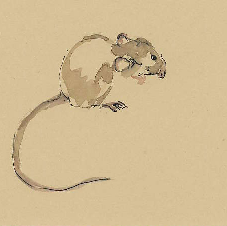
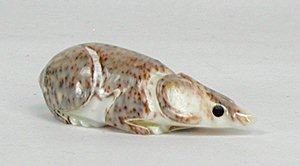
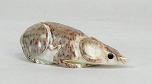

Long before the white men came to Canada, and when the animals ruled the earth, a little boy and his sister lived alone on the Canadian plains.
Their father and mother died when the children were very young. The children had no relations, and they were left to look after themselves.
They lived many miles from other people; indeed they had never seen any people but their parents, they lived so far away. The boy was very small;
he was no bigger than a baby. The girl was large and strong, and she had to provide food for both of them and do all the work in the house.
She had to take care of her little brother, and she took him with her wherever she went so that no harm would come to him. She made him a bow and
a number of arrows to play with. One day in winter she went out to gather wood for the fire. She took her little brother with her. She told him to
hide while she walked farther on. She said, "You will soon see a flock of snow birds passing near you if you watch. Shoot one of them and bring it home."
The snow lay deep on the plains, and many snow birds were flying around looking for food. The boy tried to shoot them, but his aim was not good, and
he was unable to hit any of them. When his sister came back to him, he had no bird and he was very much ashamed. But his sister said, "Never mind.
Do not be discouraged. You will have better luck to-morrow."
The next day the girl took her brother with her again when she went to gather wood. She left him behind at the place where he had hidden himself the day before.
Again the snow birds came flying past, searching for food. The boy shot several arrows at them, and at last he killed one.
When his sister came back to him, he showed her the bird. He was pleased with his success, and he said, "I shall try to kill one each day.
You must skin them and when we have enough skins, I shall make a coat from them." And his sister promised to do as he wished.
Each day the boy went with his sister and waited for the snow birds to fly past. And each day he killed one and took it home.
They skinned the birds and dried the skins. Soon the boy had enough bird skins to make a coat, for he was very small. A few bird skins made his coat.
His sister sewed the skins together and the boy put on the coat. He was very proud of it.
One day the boy said to his sister, "Sister, we are all alone in the world. We have never seen any other people except our father and mother.
Are there any other people on the earth?" His sister told him that she had heard from her mother that other people lived far away to the east beyond
the mists of the prairie, and that others, from whom his mother had come, lived away to the west beyond the distant hills. The boy said, "I should like
to see my mother's people if they are anywhere on the earth."
So one day when his sister was away, he put on his bird-skin coat and took his bow and arrows
and set out towards the distant hills to see if he could find his mother's people. It was spring-time in the north country. The sun had melted the snow, and
little streams were flowing and little blades of grass had begun to peep above the ground. But the earth was soft and wet, and the day was hot, and warm winds
blew over the plains. The boy walked for a long time. By the time the sun was high up in the sky, he was very tired for he was very small. He came to a dry
knoll and lay down to rest. Soon he fell asleep. As he slept, the sun beat down upon him. It was so hot that it singed his bird-skin coat; then the coat shrank
and shrank in the heat until it was only a small patch on his back. When he awoke and stretched himself, he burst his coat in many places, it had grown so tight.
He was very cross when he saw how the sun had ruined his coat. He shook his fist at the sun and said, "I will have vengeance; you need not think you are too
high to escape me. I will punish you yet." He decided that without his coat he could not go any farther to seek his mother's people, and at evening he returned home.
When he reached home, he showed his sister his ruined coat. He was very sad, and for weeks he would scarcely eat a bite. And all the time he
spoke bitterly of the sun. His sister tried to comfort him. She told him that next winter when the snow birds came flying south again, he could kill
more of them and she would make him another coat. But for a long time he would not be comforted. At last he roused himself. He asked his sister to make
him a snare, for he was going to catch the sun. She made him a snare from a buffalo-hide cord, but he told her that it would not do. Then she cut off
some of her long black hair, and from it she made a braided noose. The boy said that it would do very well. Then he set out to catch the sun. He travelled
many days until he came to the Great Water in the East. It was summer in the north country, and the sun rose early. The boy placed his snare just where
the sun would strike the land when he rose at dawn out of the sea, and he watched from a distance. Sure enough, in the morning just as the sun rose out
of the sea and came above the earth, he was caught in the snare and held fast. The sun could not rise; he was held fast to the earth. The boy was quite
pleased with his success. "Now," he said, "I have punished the sun for ruining my bird-skin coat." And he returned to his home on the plains.
That day there was no light upon the earth. It was twilight in all the land. The animals were in great fear and wonder. The birds fled to their nests,
and only the owl came out to look for food. At last the animals and the birds called a council to see what they could do. They found that the sun
was tied to the earth by a snare. They decided that some one must go up close to the sun and cut the cord that held him. It was a very dangerous task,
for the heat was very great and any one who tried to cut the cord would perhaps be burned to death. So they drew lots to see who should go. The lot fell
to Woodpecker. And Woodpecker went up and picked at the cord with his bill. He tried hard to cut it, but it was a strong braid of woman's hair and it
could not be cut easily. Woodpecker picked and picked at it for a long time. At last his head was so badly burned that he could stand the heat no longer
and he had to fly away without cutting the cord. His head was red from the great heat. And ever since, poor Woodpecker has had a red head because the sun
singed him when he tried to set him free.
Then the animals called for a volunteer to undertake the task of cutting the snare.
Mouse was at that time the largest and strongest animal in the world, and he thought that because of his great strength,
it was his duty to attempt the hard and dangerous task. So he set out. When he reached the snare, he tried to cut the cord with his teeth,
but the cord was strong and could not be cut easily. The heat was very great. Mouse would have run away, but he was so big and strong that
he was ashamed to leave the task, for he thought that the smaller animals would laugh at him. So he stuck to his work and sawed the cord with
his teeth, one hair at a time. Soon his back began to burn and scorch and smoke. But he stuck to his task. Then he began to melt away
because of the great heat, and the whole top of his body was burned to ashes. But still he stuck to his task for a long time, cutting hair after
hair. Finally he cut the last hair; the snare parted, and the sun was at last free to continue his day's journey and give light to the world.
And the animals and birds rejoiced greatly over the success of Mouse. But poor Mouse had melted almost entirely away in the great heat. When he
went up to the snare, he was the largest animal in the world; when he came down, he was the smallest. And his back was burned to ashes. And ever
since, Mouse has been the smallest animal in the world, and his coat has always been the colour of gray ashes, because he was scorched when freeing
the sun from a snare in the old days.
 

Transcribed by Cyrus MacMillan, 1917. The writer's deepest thanks are expressed to the nameless Indians and "habitants," the fisherman and sailors, "the spinners and the knitters in the sun," from whose lips he heard these stories.

Back to Top